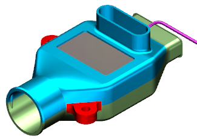
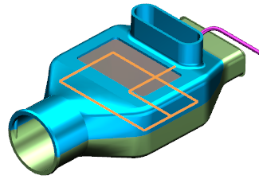
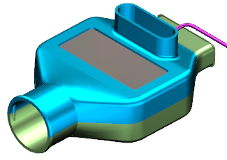
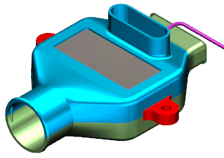
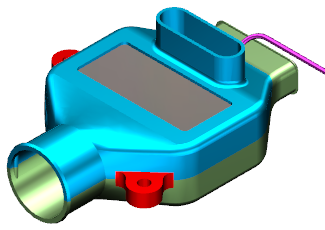
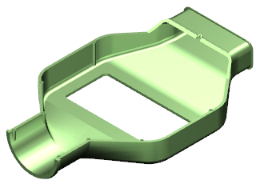
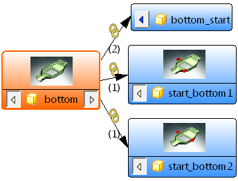
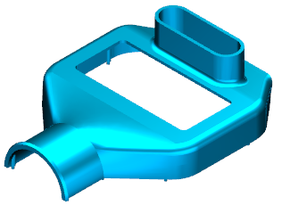
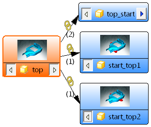
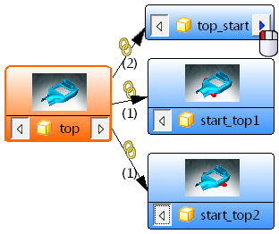

打开示例产品装配
-
打开 wav3_sys_eng_production_assembly1。

-
打开 wav3_sys_eng_production_assembly2。
所有这些装配都是使用这个练习中描述的方法创建的，两组单独的起始部件都是基于设计装配中的上半部分和下半部分两个组件创建的，当您对设计装配中的基本形状进行任何修改时，两组产品部件及其装配都将发生更新。

-
将 design_assembly 设为工作部件。

-
显示组件sys_eng_top，并将顶部和底部组件的引用集都设置为模型。

-
在部件导航器中，选择草图 (1)。
草图 (1)将驱动外壳内部组件的大小，内部组件将驱动外壳的大小。

-
在细节面板中，将表达式 p0的值从80修改为100。
设计装配中的隐藏实体将进行更新，并且上半部分和下半部分的种子部件也将更新到新的大小。

-
将 production_assembly1设为工作部件。
这个装配中的外壳顶部和底部的大小都将发生更新，因为安装凸起是使用链接体的边进行设计的，因此它们将正确更新。

-
将 production_assembly2设为工作部件。
第二组设计部件也将进行更新。

-
将 sys_eng_bottom 设为工作部件。

-
打开关系浏览器
 。
。 -
在 NX 关系浏览器中，选择视图→显示工作部件的关系。
在这个缩小的视图中，您可以看到部件文件 sys_eng_bottom 将驱动所有三个底部起始部件，您创建的是 bottom_start，其它两个是在您打开两个产品装配时打开的。

-
将 sys_eng_top 设为工作部件。

-
在 NX 关系浏览器中，选择视图→显示工作部件的关系，浏览器将再次更新。
在这个缩小的视图中，您可以看到部件文件 sys_eng_top 将驱动所有三个底部起始部件，您创建的是 top_start，其它两个是在您打开两个产品装配时打开的。

这些起始部件表示您最终的产品部件，它们被链接到原始的种子部件以及设计装配中，任何对设计装配的修改都将传递到所有产品部件中。
-
点击如图所示的箭头。

节点将展开以显示您创建的顶部起始部件与底部起始部件之间的 WAVE 链接。
-
关闭所有部件。